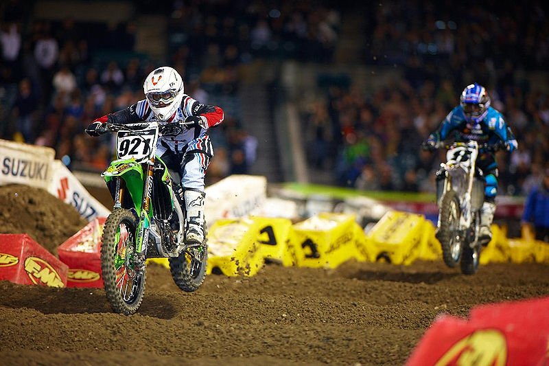

Supercross is an indoor dirt-bike racing sport which evolved from motocross. The major difference between supercross and motocross is that, supercross races are conducted on specifically built indoor dirt tracks which consist of steep jumps and obstacles, as opposed to motocross, in which the course used is longer and consist of dirt and terrain in a natural environment. The sport is very popular in the United States, Australia, and France.
The course consists of several types of obstacles that riders have to navigate through. Some of them are,
Depending on the capacity of the engines used, supercross bikes are classified into two classes, 450cc and 250cc. The 450cc class races are for eight laps, while the 250cc races are for six laps. Races are conducted in heats format, where 20 riders compete in each heat, until the final 20 riders are selected for the final race to decide the winner.
AMA Supercross Championship and FIM World Supercross Championship are the two major series of races conducted for the sport. 